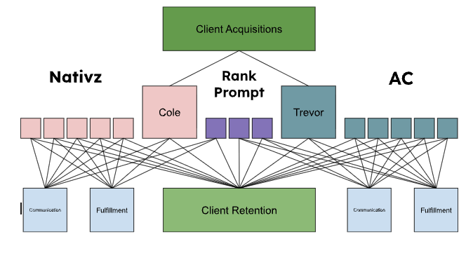
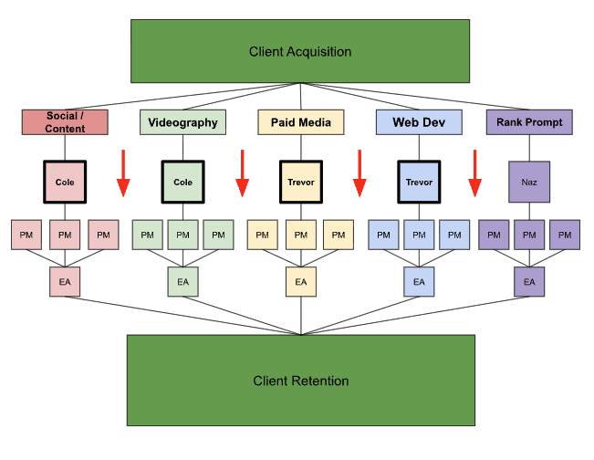
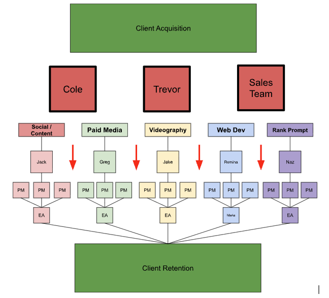
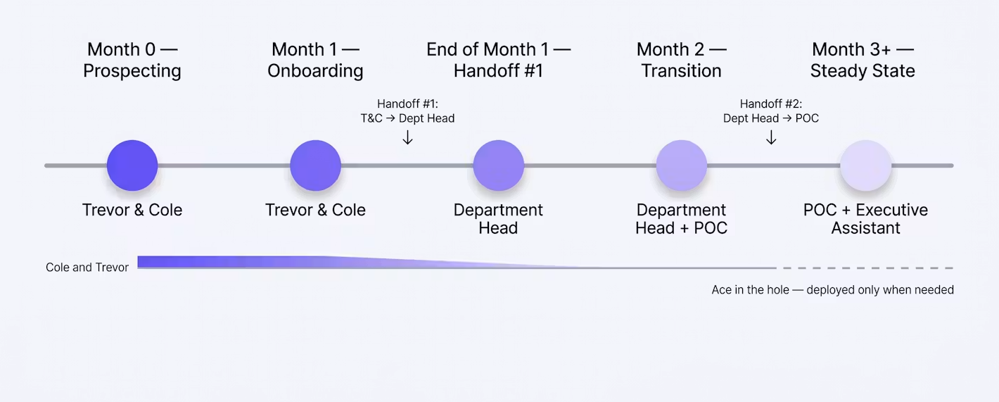

"When it's everyone's responsibility, it's no one's." More accurately — when it's everyone's responsibility,
it's Cole and Trevor's.
The success condition, framed two ways.
Wrapped around all of it: an overarching system that carries a client from proposal to lifelong customer.
What "it worked" actually looks like — the finish line, defined so it can be measured.
Everyday communication is delegation.
Their appearance is an event.
Four specific things hurting the company right now. Each one is color-coded and answered by a matching solution in the next section.
They aren't just essential for long-term strategy — they're essential for day-to-day function. Every client, every decision, every escalation eventually lands on them.
Clients ask for "one more thing" and we do it because we can. Every project becomes every service. Boundaries dissolve. Estimates stop meaning anything.
Every client has so much coverage that responsibility gets diffused. There's no one to blame — which means everything routes back to Cole and Trevor by default.
Three people on one client and zero on another. We're always either drowning or invisible. Staffing follows whoever's free, not what the client actually needs.
Each solution is color-matched to the pain it answers. This isn't reorg for its own sake — it's a direct response.
Ownership pushes down to Department Heads.
Each department has a Head who inherits day-to-day decisions from Cole and Trevor. T&C stop being the default answer to every question. Their calendar reflects it. Their inbox reflects it.
Departmentalization — even just the naming convention.
The moment we call them departments, the scope becomes obvious. A client bought "Paid Media" and "Social" — if they ask for something else, it's clearly in another department. The conversation stops being "can you also do this?" and starts being "let's bring in Web Dev." No boundary negotiation. No silent scope creep. Just clarity.
One POC = one owner.
A single POC per client means exactly one person is accountable for that relationship. Wins and losses land on a name. There is a fall guy — and there's a hero. Cole and Trevor aren't the default for either.
Staffing flows through the Department Head.
The Head assigns people to clients by department, not by whoever's free that morning. Coverage becomes deliberate. Redundancy gets cut. Gaps get filled. The blitz stops.
The premises this plan is built on.
Three diagrams. The current mess, the current burden made explicit, and the target end state.



Changes that are cheap to make and immediately relieve the load.
The real work. What → Who → Where.
Before deciding how to go forward, define what the business actually does. Ideally four or five pillars, called "Departments":
AC and Native's greatest strength is also its greatest weakness: scope creep. Bundling services is wonderful — but even just naming these as separate departments gives the client and the employee more clarity: though we're working on the same project, our roles are completely different.
Each department must have a Head. Trevor and Cole may each head at most one department. The point of departmentalization is to make hiring and systemization easier — hiring a new Cole or a new Trevor is impossible, but adding a new Project Manager in Web Dev, or a new Executive Assistant in Social, is much easier.
Now that we have buckets, look at where every employee currently sits. Skill set, client assignments, gaps.
Plug each department and person into the client structure.
The scaffolding month. Quick fixes that buy Trevor and Cole time to actually oversee this initiative.
Find a replacement for four meetings. Give them everything they need. Send an email to clients ahead. Track outcomes as "test cases" on smaller clients.
Cap meetings at POCs per department. At most one social lead and one paid media lead per call.
Draft the working list of who will be the POC for each client, preparing for the following week.
Progressively remove Trevor and Cole from the remaining recurring meetings.
The system in motion. What each role owns at each phase, and the two moments where ownership formally transfers.

We are not losing the horizontal nature of the organization. These handoffs are about ownership of client communication, not a rigid chain of command. Departments still coordinate laterally. PMs still talk to PMs. Executive Assistants still talk to each other. The org stays flat — the relationship to the client is what gets structured.
The structural positions the reorg produces.